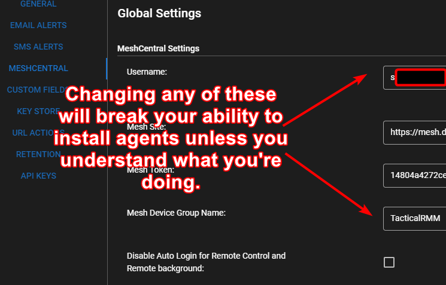

Troubleshooting¶
Server Troubleshooting Script¶
If you've asked for help in #support please run this, and send a screenshot at the top of the thread created for troubleshooting your issue.
Blur your domains if you desire privacy (or DM the person that's helping you to make everyones life easier).
First, ensure that dig is installed via the dnsutils package:
sudo apt update && sudo apt install -y dnsutils
Next, download and run the troubleshooting script:
wget -N https://raw.githubusercontent.com/amidaware/tacticalrmm/develop/troubleshoot_server.sh
chmod +x troubleshoot_server.sh
./troubleshoot_server.sh
Note
If you're working with a support person please provide the full script output. If you don't want to post publicly, feel free to DM the person working with you in Discord #support channel
Celery queue stuck¶
If you notice issues such as bulk scripts or commands not executing, client/site colors not clearing, or alerts not resetting, it's possible that the Celery queue is stuck. Follow these steps to check and resolve the issue:
Navigate to the following directory and activate the virtual environment:
cd /rmm/api/tacticalrmm
source ../env/bin/activate
Download the management command:
wget -O /rmm/api/tacticalrmm/core/management/commands/get_celery_queue_length.py 'https://raw.githubusercontent.com/amidaware/tacticalrmm/refs/heads/develop/api/tacticalrmm/core/management/commands/get_celery_queue_length.py'
Check the number of items in the Celery queue:
python manage.py get_celery_queue_length
If the number of items in the queue is very high (greater than 100), the queue is likely stuck.
Purge the Celery queue:
celery -A tacticalrmm purge -f
Restart Celery and Celery Beat:
sudo systemctl restart celery celerybeat
After completing these steps, the queue should be cleared, and Celery should resume normal operation.
Make sure DNS (name resolution) was setup properly¶
From the agent¶
Open command prompt:
ping rmm.example.com
ping api.example.com
ping mesh.example.com
The IP address for all 3 should reflect your Tactical RMM server.
Problems after new server install¶
In the very unlikely event you have issues after install please wipe the box and install again (following all the steps including downloading the install script but not running it yet) use the following command which will log the install progress and if you continue to have issues will assist with support of the installation.
bash -x install.sh 2>&1 | tee install.log
Note
Logging of installs isnt desirable as it logs extremely sensitive information which is why this isnt done by default! Do not post the raw log publicly only provide it if requested and then by dm only. Authorized users in Discord are: @BurningTimes#1938 @sadnub#6992 @dinger1986#1734 @silversword#9652
"Bad credentials" error when trying to login to the web UI¶
If you are sure you are using the correct credentials and still getting a "bad credentials" error, open your browser's dev tools (Ctrl+Shift+J on Chrome) and check the Console tab to see the real error.
It will most probably be a CORS error which means you need to check your DNS settings and make sure whatever computer you're trying to access the UI from resolves your 3 subdomains to the correct IP of the server running the RMM (public IP if running in the cloud, or private IP if running behind NAT).
If you see an error about SSL or certificate expired, then your Let's Encrypt cert has probably expired and you'll need to renew it.
Refer to the Let's Encrypt cert renewal instructions here.
Agents not installing or updating¶
The most common problem we've seen of agents not installing or updating is due to Antivirus blocking the updater executable.
Windows Defender will 100% of the time block the updater from running unless an exclusion is set.
Refer to the Agent Installation instructions for AV exceptions to set and manually doing an agent update with logging to troubleshoot further.
Agents will also not automatically update if they are too old.
If you have agents that are relatively old, you will need to uninstall them manually and reinstall using the latest version.
The mesh installer is created at time of install. Make sure it's working by running this on your TRMM server.
Check TRMM connection to MeshCentral
/rmm/api/env/bin/python /rmm/api/tacticalrmm/manage.py check_mesh
sudo docker compose exec tactical-backend python manage.py check_mesh
Warning
As of v0.12.0 Error 1005 usually means something doesn't match and / or the mesh username has to be all lower case.
If you customize the "Mesh Device Group Name" in Tactical's settings you MUST also manually match that Mesh Group in mesh itself.
Collect Update debug logs for troubleshooting agents that don't update
Make sure TRMM can connect to mesh
Did you customize MeshCentral options and now agents won't install?¶
fork/exec C:\Program Files\TacticalAgent\meshagent.exe: This version of %1 is not compatible with the version of Windows you're running. Check your computer's system information and then contact the software publisher

or MeshCentrals Group name
These two sets of settings must match for the install to download the mesh installer. Fix it till the test above works.
Agents not checking in or showing up / General agent issues¶
Eg. Agent Boot time: 53 years ago
These are NATS problems. Try the quick fixes first:
From Admin Web Interface¶
First, reload NATS from Tactical's web UI:
Tools > Server Maintenance > Reload Nats Configuration
If that doesn't work, check each part starting with the server:
Server SSH login¶
Reload NATS:
/rmm/api/env/bin/python /rmm/api/tacticalrmm/manage.py reload_nats
sudo systemctl restart nats.service
Look at NATS service errors (make sure it's running):
sudo systemctl status nats.service
If NATS isn't running see detailed reason why it isn't:
sudo systemctl stop nats.service
nats-server -DVV -c /rmm/api/tacticalrmm/nats-rmm.conf
Fix the problem, then restart NATS:
sudo systemctl restart nats.service
From Agent Install¶
Open CMD as admin on the problem computer and stop the agent services:
net stop tacticalrmm
Run the tacticalrmm service manually with debug logging:
"C:\Program Files\TacticalAgent\tacticalrmm.exe" -m rpc -log debug -logto stdout
This will print out a ton of info. You should be able to see the error from the debug log output.
Please then copy / paste the logs and post them either in our Discord support chat, or create a github issue.
If all else fails, simply uninstall the agent either from control panel or silently with "C:\Program Files\TacticalAgent\unins000.exe" /VERYSILENT and then reinstall the agent.
All other errors¶
First, run the update script with the --force flag.
This will fix permissions and reinstall python / node packages that might have gotten corrupted.
./update.sh --force
Check the debug log from the web UI: File > Debug Log
Open your browser's dev tools (Ctrl+Shift+J on Chrome) and check the Console tab for any errors.
Check all the systemd services that the rmm uses to function and check to make sure they're all active / running and enabled:
sudo systemctl status rmm.service
sudo systemctl status daphne.service
sudo systemctl status celery.service
sudo systemctl status celerybeat.service
sudo systemctl status nginx.service
sudo systemctl status nats.service
sudo systemctl status nats-api.service
sudo systemctl status meshcentral.service
sudo systemctl status mongod.service
sudo systemctl status postgresql.service
sudo systemctl status redis-server.service
Or you can use systemctl --failed to see any failed services on your machine.
Read through the log files in the following folders and check for errors:
/rmm/api/tacticalrmm/tacticalrmm/private/log
/var/log/celery
Using Cloudflare DNS¶
-
rmm.example.com can be proxied.
-
api.example.com can be proxied when using (the default) agent configuration which utilizes websockets.
-
mesh.example.com can NOT be proxied because Cloudflare changed something in Aug 2023 and now it doesn't work. See 5302.
If you're getting Invalid group id at the end of the install you're probably doing something wrong / wrong IP for api.
Testing network connectivity between agent and server¶
Using PowerShell, make sure you can connect to 443 from agent to server:
Test-NetConnection -ComputerName api.example.com -Port 443
Check your SSL certs to make sure they are what they should be (no proxy stuff): https://www.digicert.com/help/
Are you trying to use a reverse proxy to share your single public IP with multiple services on 443? This is complicated and unsupported by Tactical RMM. Test your setup.
Take Control or Remote Background missing button / can't connect¶
This is a MeshCentral connection problem.
- Don't use Firefox (test in vanilla Chrome first).
- Open
mesh.domain.comand see if the agent is listed there. - If you don't see your agent (or it's offline), restart TRMM server (or service).
- Restart Mesh Agent on client PC.
- Check again. Still not appearing in
mesh.domain.comin Mesh go to "My Server" > Trace tab > Click tracing button > Check MeshAgent traffic. - Restart Mesh Agent on client PC. You should see something in trace like .
- If you don't, you have firewall / connectivity issues (open
mesh.domain.comfrom agent and troubleshoot. You aren't using a proxy right?).
Need to recover your Mesh token?¶
Login to server with SSH and run:
node /meshcentral/node_modules/meshcentral --logintokenkey
Mesh Agent not connecting to server¶
When agents don't show up in your Mesh console (after logging into https://mesh.EXAMPLE.COM), and all data is blank. Your AV has most likely blocked the agent.

Error 500¶
These are always logged to /rmm/api/tacticalrmm/tacticalrmm/private/log/django_debug.log use this to check.
Can't login on server after first setup¶
You're sure you're typing in everything right, giving it 2FA code, and getting error 400 login error.
TOTP is time sensitive, check your time/NTP and make sure it's right! :)
Error 0:¶
If you're trying to login check dns, check server and client time, and check your certs.
executable file not found in %PATH%¶
This error can show up for PowerShell or choco.
exec: "Powershell": executable file not found in %PATH%exec: "choco.exe": executable file not found in %PATH%choco : The term 'choco' is not recognized as the name of a cmdlet
Run the Win_Powershell_TestPATH.bat script to gather information about your environment. This script will output either ExpandString or String. See Microsoft's docs for details.
- ExpandString (REG_EXPAND_SZ) means
%SystemRoot%will expand toC:\Windows. Reboot and choco will most likely work. - String (REG_SZ) means
%SystemRoot%will not be expanded. Changing the registry value type will most likely work.
Note
If your path does not have Path variables like %SystemRoot%, the registry type does not matter because the paths are already expanded.
If the script outputs "String", changing the registry type and restarting the Tactical service will most likely work. This script will output the value type and the $PATH. Make note of the $PATH because Set-ItemProperty needs the value to change the type. Run this as administrator and uncomment Set-ItemProperty to change the registry type to ExpandString. Run the first two commands to get the type and $PATH to make sure everything is good. Restart the TacticalRMM service and try the command again.
$kind = (Get-Item -Path 'Registry::HKEY_LOCAL_MACHINE\System\CurrentControlSet\Control\Session Manager\Environment').GetValueKind('PATH')
Write-Output "Path kind before the change: ${kind}"
$path = Get-ItemPropertyValue -Path 'Registry::HKEY_LOCAL_MACHINE\System\CurrentControlSet\Control\Session Manager\Environment' -Name Path
Write-Output "Path before changing the type:", $path
Write-Output "Changing the registry key type"
# Needs to be run as administrator
# Set-ItemProperty -Path 'Registry::HKEY_LOCAL_MACHINE\System\CurrentControlSet\Control\Session Manager\Environment' -Name PATH -Value $path -Type ExpandString
Write-Output ""
$kind = (Get-Item -Path 'Registry::HKEY_LOCAL_MACHINE\System\CurrentControlSet\Control\Session Manager\Environment').GetValueKind('PATH')
Write-Output "Path kind after the change: ${kind}"
$path = Get-ItemPropertyValue -Path 'Registry::HKEY_LOCAL_MACHINE\System\CurrentControlSet\Control\Session Manager\Environment' -Name Path
Write-Output "Path after changing the type:", $path
Issues with agents offline after reboot or new install on AWS and other cloud platforms using cloudinit or similar¶
- Run
cat /etc/hosts - If the output shows that the hosts file is managed by another process follow the instructions to change the config.
- Add in your api, rmm and mesh urls on the line for 127.0.1.1 in the hosts file
- Save the hosts file
- Restart services or run
update.sh --force
54 year agents in the dashboard can be a sign of this NATS problem
Server 2016/2019 agent not updating¶
If you're seeing things like
time="2025-03-17T01:02:11-07:00" level=error msg="error creating NewUpdateSession: ole.CoInitializeEx(0, ole.COINIT_MULTITHREADED): Cannot change thread mode after it is set."
time="2025-04-30T09:28:47-07:00" level=error msg="SyncMeshNodeID() getMeshNodeID() exit status 0xc0000142: "
time="2025-04-30T09:28:55-07:00" level=error msg="Checkrunner RunChecks exit status 0xc0000142: "
time="2025-04-30T09:29:07-07:00" level=error msg="SyncMeshNodeID() getMeshNodeID() exit status 0xc0000142: "
time="2025-04-30T09:29:54-07:00" level=error msg="Checkrunner RunChecks exit status 0xc0000142: "
time="2025-04-30T09:30:46-07:00" level=error msg="Checkrunner RunChecks exit status 0xc0000142: "
time="2025-04-30T09:35:07-07:00" level=info msg="Agent updating from 2.9.0 to 2.9.1"
This is a problem with the non-interactive heap stack filling up. The default value is 768KB, and needs to be updated to 4MB.